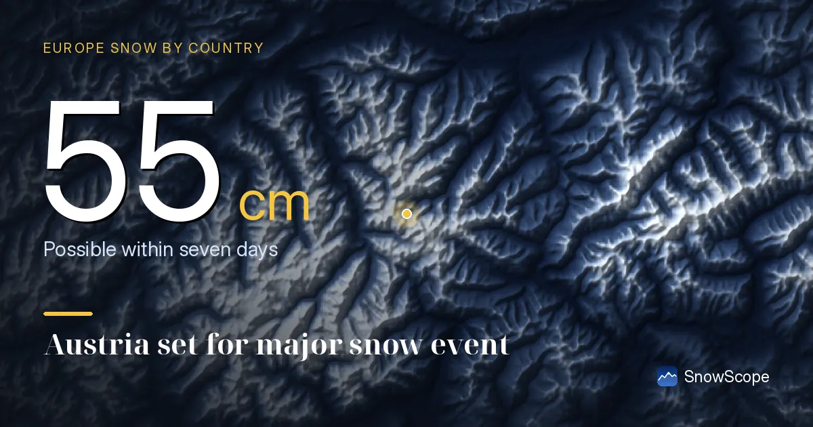
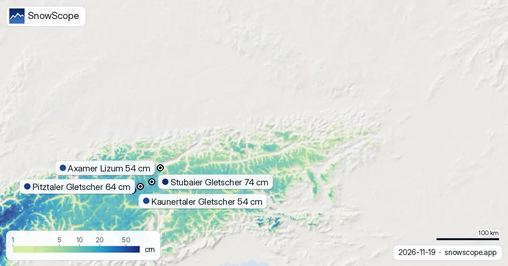
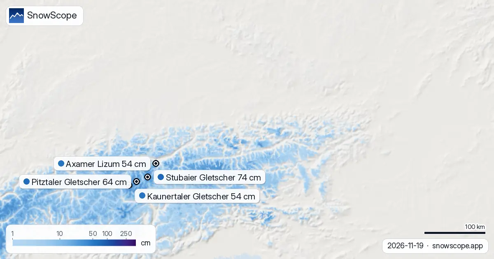

Austria set for major snow event: 55 cm possible within seven days
Austria gained nearly 6,000 km2 of snow cover in one day as a storm system moved in. The week ahead looks decisive: 55 cm is possible at high elevations, with 15 cm falling on 23 November alone.
See the live snow forecast for Stubaier Gletscher in the SnowScope appSnow depth, powder alerts and the 3D map, free.
Major snow arriving this week
A storm is heading for the Alps. Our model shows Austria could see up to 55 cm of new snow in the next seven days, with the heaviest fall on 23 November when 15 cm is forecast. The three days from now until 22 November could bring 34 cm to the highest peaks.
This is the turning point in the season. Right now, 48 percent of Austria's modelled ski area is white, up from 30 percent just seven days ago. Snow has jumped from 16,000 km2 to 25,250 km2 in that time, the fastest gain in recent weeks.
| Resort | Snow depth | New snow, 72 h | Coming, next days | Top |
|---|---|---|---|---|
| Stubaier Gletscher | 74 cm | 16 cm | 15 cm | 3,208 m |
| Pitztaler Gletscher | 64 cm | 18 cm | 17 cm | 3,424 m |
| Kaunertaler Gletscher | 54 cm | 17 cm | 16 cm | 3,107 m |
| Axamer Lizum | 54 cm | 11 cm | 12 cm | 2,334 m |
| Kaprun | 52 cm | 10 cm | 8 cm | 3,024 m |

Where the snow is falling hardest
Three regions are leading the accumulation. Carinthia has picked up 31 cm in the last three days, Vorarlberg 28 cm, and the Ötztal Alps 25 cm. These are the zones where the model is most confident about fresh snow through the week.
The glacier resorts in Tyrol are catching the best of it. Stubaier Gletscher holds 74 cm now after 16 cm in the last three days, while Pitztaler Gletscher sits at 64 cm. Both should gain another 15 to 17 cm in the next three days.

Height matters now
The snow line today sits at 1,300 m, still low for mid-November. Above 2,000 m, our model shows full coverage and depths of 15 cm at 2,000 to 2,500 m, rising to 27 cm above 2,500 m. The higher you go, the deeper the snow.
Below 1,500 m, coverage is thin and patchy. Only 46 percent of the band from 1,000 to 1,500 m has snow, with an average of just 1 cm. Any skiing below 1,200 m depends on a base laid down in the next few days or on a resort maintaining it artificially.
How this week compares to recent days
Yesterday alone added 5,890 km2 of snow cover—a jump we have not seen in weeks. The 72-hour total of 19 cm is the peak we have modelled so far this season. This is not a steady climb; it is a step change.
Four days ago, Kaprun led with 83 cm. Today, Stubaier Gletscher has taken the top spot at 74 cm. The glacier resorts are sorting themselves by altitude and location as this storm system beds in. Watch the highest peaks: they are where the gains will keep coming.
What comes after the storm
The first week of December looks quieter. Our model forecasts a maximum of 15 cm in the period 27 November to 3 December, a sharp drop from this week's intensity. The main event is now, not later.
Glaciers versus lower resorts
The gap between the glaciers and the lower valleys is widening. Stubaier Gletscher at 3,208 m is 20 cm deeper than Axamer Lizum at 2,334 m, even though Axamer Lizum is in the same region. By 22 November, that gap will grow. If you are choosing where to ski in the next week, altitude is your best friend.
Tips for skiers
- Aim for elevations above 2,000 m in the next three days. The model shows full snow cover and depths that will improve daily. Glaciers and high peaks are your safest bet.
- Watch 23 November closely. That is when the heaviest single snowfall is forecast—15 cm. Plan your timing around that date if you can.
- Carinthia, Vorarlberg, and the Ötztal Alps are receiving the most snow. If you have flexibility, these regions are tracking ahead of the Austrian average.
- Before heading off-piste, check the official avalanche bulletin. Fresh snow of this scale always raises the question of stability. Early-season snow on thin ground can slide.
- Lower elevations are still marginal. Below 1,500 m, do not assume there will be enough to ski on. The thaw line at 1,300 m will shift up only slowly as the week progresses.
About these numbers
Resort snow depths are the deepest snow on the resort's upper slopes from the SnowScope snow model (about 1 km, run of 19 November); they are estimates for an area, not a measurement at one point. Station values are measurements on the date shown. Forecasts can change. Always read the official avalanche bulletin before going off-piste.
Cite this report
For research, teaching or the press: the numbers and charts are free to reuse under CC BY 4.0 with this citation.
SnowScope (2026), Austria set for major snow event: 55 cm possible within seven days, https://snowscope.app/blog/en/2026/11/austria-snow-on-the-way-19-november-2026.html, accessed 2026-11-19
SnowScope (Atlas Labs). (2026, November 19). Austria set for major snow event: 55 cm possible within seven days. SnowScope snow reports. https://snowscope.app/blog/en/2026/11/austria-snow-on-the-way-19-november-2026.html
BibTeX
@misc{snowscope2026austriasnowontheway19nov,
author = {{SnowScope (Atlas Labs)}},
title = {Austria set for major snow event: 55 cm possible within seven days},
year = {2026},
month = nov,
howpublished = {\url{https://snowscope.app/blog/en/2026/11/austria-snow-on-the-way-19-november-2026.html}},
note = {Published 2026-11-19 12:38 UTC; accessed 2026-11-19}
}· CC BY 4.0 · Methods, data and tools →
Stubaier Gletscher: snow and temperature by height, this winter vs last (tools) →
Follow Stubaier Gletscher
Free: a message when fresh snow is coming, and the forecast every morning.
More snow reports

Himalaya snow cover in November 2026 from NASA MODIS: snow on 610,409 km² of ground above 2,000 m between the Hindu Kush and Bhutan, half the clear ground white from about 4,800 m in Nepal and 3,600 m in the Karakoram. The NDSI explained, plus shadows, cloud and the low autumn sun.

SnowScope's peak finder is a free peak finder app: point your phone at the mountains and it names the summits, with height, distance and climb time. Our tests: 98 % of the summits it lists are really in sight, and on real photos it corrected compass errors of up to 105° to 0.15°. Free with 3 names, every peak for $0.99 once.

Glacier skiing from 68 EUR a day: we compared seven glaciers in France, Austria, Germany and Switzerland by price and by the snow they usually hold in December.